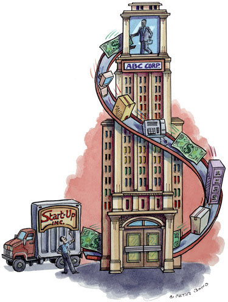

Un Vivero de Empresas es un espacio físico, especialmente diseñado para acoger empresas de nueva creación, donde los emprendedores pueden disponer de unas instalaciones y servicios a unos precios más reducidos que los del mercado.
Apuntes: También llamados incubadoras de empresas o centros de empresas: son espacios públicos que, normalmente, dependen de un Ayuntamiento o una Universidad en los que se ofrece a las empresas un espacio temporal donde localizarse a bajo coste, además de asesoramiento y ayudas a la creación de empresas.
